As we have seen, a linear equation can be represented as a matrix
of one row. A system of equations can be written as a matrix with
as many rows as there are equations. For example:
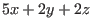
could be written as
Here the first column refers to the
coefficients, the second column to the
coefficients, the third to the
coefficients and the fourth to constant terms.
We would call a matrix made up of the first three columns a coefficient matrix and
the matrix made up of just the last column a matrix of constant terms.
A general system of
equations in
variables,
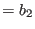
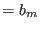
is written as a
matrix
By simply making sure that coefficients for each variable are entered
only in the column assigned to that variable we save a lot of writing. This is
not the only good reason to do this. It also makes it much easier to perform
the algebraic operations needed to solve a system of equations. We do this
by defining row operations.
Definition 2..1Row Operations
Operation (1)
Interchange any two rows.
Operation (2)
Multiply all entries in a row by a nonzero scalar.
Operation (3)
Add a multiple of one row to another row.
We give some examples of these operations and show how they affect the corresponding
system of linear equations.
We apply Operation (1) to row 1 and row 2.
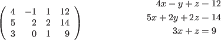
We demonstrate Operation (2) by multiplying across the
third row by
.
We show Operation (3) by multiplying row 1 by
and adding it to row 2.
Note that we do not change row 1.
We will continue using row operations until we have the matrix of coefficients
(the first three columns of our matrix) in the form:
One way to proceed would be to use Operation (2) and multiply
row 1 by
.
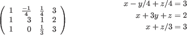
Now we will use Operation (3) again to add
times row 1 to row 3.
And then we'll add
times row 1 to row 2.
Let's add row 3 to row 1 (we are using Operation (3) and multiplying
row 3 by 1 before we add it).
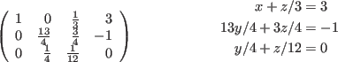
Then use Operation (2) to get a
in column 2 of row 3 by
multiplying by
.
Now we use Operation (3) and add
times row 3 to
row 2.
Now multiply row 2 by
(Operation (2)).
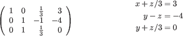
Now subtract row 2 from row 3 (i.e. multiply row 2 by
and add it
to row 3).
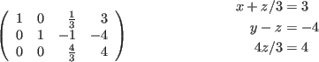
Multiply row 3 by
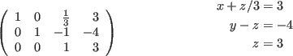
Add row 3 to row 2
Finally, multiply row 3 by
and add it to row 1.
We can see that by using the row operations we have solved the system of
equations. We check this by trying these values in our original
equations
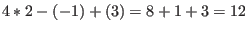
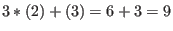
Which row operations we use to follow this procedure (called Gauss-Jordan elimination)
is mostly a matter of taste. We usually try and pick the row operations to perform that
will minimize the amount of calculation we need to do.
The preceding example could certainly have been done with fewer row operations.
Problems 2.1
We don't really need three row operations. Operation (1), where we interchange two
rows, could be replaced by applying the two other row operations. Show that this is true.
In Chapter 1 we talked about postfix notation. If we let integer numbers represent
rows and use the binary operation symbol
to mean matrix (row) addition, use the
result of the previous problem to invent a postfix notation to represent row operations.
\ex
\begin{enumerate}
\item See the next section for exercises based on this chapter.
\end{enumerate}


![\begin{picture}(30,3)
\begin{minipage}[lb]{15em}
\begin{displaymath}\left(\begin...
...
4x - y + z & =12 \\
3x + z & =9 \\
\end{align*}\end{minipage}\end{picture}](img469.gif)
![\begin{picture}(30,3)
\begin{minipage}[lb]{15em}
\begin{displaymath}\left(\begin...
...x + 2y + 2z & =14 \\
x + z/3 & =3 \\
\end{align*}\end{minipage}\end{picture}](img471.gif)
![\begin{picture}(30,3)
\begin{minipage}[lb]{15em}
\begin{displaymath}\left(\begin...
...
x + 3y + z & =2 \\
x + z/3 & =3 \\
\end{align*}\end{minipage}\end{picture}](img472.gif)

![\begin{picture}(30,3)
\begin{minipage}[lb]{15em}
\begin{displaymath}\left(\begin...
... + 3y + z & =2 \\
y/4 + z/12 & =0 \\
\end{align*}\end{minipage}\end{picture}](img476.gif)
![\begin{picture}(30,3)
\begin{minipage}[lb]{15em}
\begin{displaymath}\left(\begin...
...4 + 3z/4 & =-1 \\
y/4 + z/12 & =0 \\
\end{align*}\end{minipage}\end{picture}](img477.gif)
![\begin{picture}(30,3)
\begin{minipage}[lb]{15em}
\begin{displaymath}\left(\begin...
...3y/4 + 3z/4 & =-1 \\
y + z/3 & =0 \\
\end{align*}\end{minipage}\end{picture}](img479.gif)
![\begin{picture}(30,3)
\begin{minipage}[lb]{15em}
\begin{displaymath}\left(\begin...
...
y/4 - z/4 & =-1 \\
y + z/3 & =0 \\
\end{align*}\end{minipage}\end{picture}](img481.gif)
![\begin{picture}(30,3)
\begin{minipage}[lb]{15em}
\begin{displaymath}\left(\begin...
...+ z/3 & =3 \\
y & =-1 \\
z & =3 \\
\end{align*}\end{minipage}\end{picture}](img485.gif)
![\begin{picture}(30,3)
\begin{minipage}[lb]{15em}
\begin{displaymath}\left(\begin...
...
x & = 2 \\
y & =-1 \\
z & = 3 \\
\end{align*}\end{minipage}\end{picture}](img487.gif)